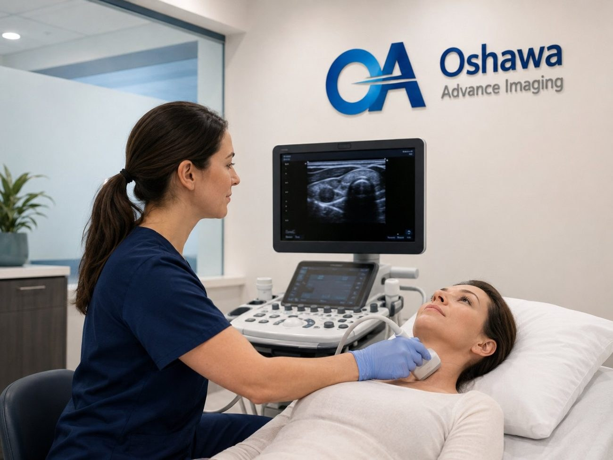

The short version
- Thyroid nodules are very common. By age 60, about half of all people have at least one, and more than 90 percent are not cancer.
- Ultrasound is the best first test for looking at the thyroid. It shows the size of the gland and the size and features of any nodules.
- No preparation is needed. You can eat, drink and take your medicines as usual.
- The scan takes about 20 to 30 minutes, is painless and uses sound waves, not radiation. It is safe in pregnancy.
- A physician interprets the images and sends a report to the provider who ordered the exam. Many nodules need only a follow-up scan.
- With a valid health card and a requisition, the exam is covered by OHIP.
Finding a lump in your neck, or being told that your thyroid "feels a little full", is unsettling. So is a phone call about a thyroid blood test that came back outside the normal range. In both situations, the next step is usually the same: a thyroid ultrasound.
This guide explains what the thyroid does, why ultrasound is the test of choice, what the scan can and cannot tell your doctor, and what to expect at our clinic in downtown Oshawa.
What the thyroid does
The thyroid is a small, butterfly shaped gland at the front of the neck, just below the Adam's apple. It makes hormones that set the pace of the body: heart rate, temperature, energy and weight are all affected by it. A blood test called TSH shows how well the gland is working. An ultrasound shows what it looks like. The two tests answer different questions, and doctors often order both.
Why a thyroid or neck ultrasound is ordered
- A lump or swelling felt by you or by your doctor during an exam.
- An enlarged thyroid (goitre), to measure it and look for nodules.
- Abnormal thyroid blood tests, to look for changes such as thyroiditis.
- A nodule seen by chance on a CT, MRI or other scan done for another reason.
- Follow-up of a known nodule, to see whether it has changed.
- Other neck concerns, such as enlarged lymph nodes, a swollen salivary gland, or a lump under the skin.
Thyroid nodules: common and usually harmless
A thyroid nodule is a small lump of tissue or fluid inside the gland. Nodules are far more common than most people realize. According to the American Thyroid Association, about half of all people have at least one by age 60, and more than 90 percent of nodules are benign. They are about four times more common in women than in men, and they become more common with age.
Most nodules cause no symptoms and are found by chance. A small number are cancers, which is why nodules are looked at carefully. Thyroid cancers found this way are usually slow growing and very treatable.
What the ultrasound shows
Ultrasound produces a detailed picture of the gland and can find nodules that are too small to feel. For each nodule, the report describes features that help the interpreting physician estimate how likely it is to need further attention.
Scroll sideways to see the full table.
| Feature | What it means |
|---|---|
| Size | Measured in three directions, so that any change can be tracked over time |
| Composition | Whether the nodule is fluid filled (cystic), solid, or a mix of the two. Purely fluid filled nodules are almost always harmless. |
| Brightness | How the nodule looks compared with normal thyroid tissue |
| Shape and edges | Smooth, well defined edges are reassuring |
| Bright specks | Tiny calcium deposits can be a reason to look more closely |
| Nearby lymph nodes | Checked for normal size and shape |
Ultrasound cannot say for certain whether a nodule is benign or cancerous, and it does not measure how well the thyroid is working. What it does very well is sort nodules into those that can safely be left alone, those that should be checked again in a year or two, and those that should be sampled with a fine needle biopsy. If a biopsy is recommended, your doctor will arrange a referral.
When to see your doctor about a neck lump
Most neck lumps turn out to be harmless, such as a swollen lymph node after a cold or a benign nodule. It is still sensible to have any new lump examined. See your doctor if you notice a lump at the front of your neck that moves when you swallow, a lump that has been present for more than two or three weeks, a lump that is growing, a change in your voice that does not settle, or difficulty swallowing. If you have trouble breathing, treat it as an emergency. Your doctor will examine your neck, usually order thyroid blood tests, and give you a requisition for an ultrasound if one is needed.
How to prepare
There is nothing you need to do in advance. Eat and drink normally and take your usual medicines. A few practical tips:
- Wear a top with an open or loose collar, and leave necklaces at home.
- Bring your Ontario health card and your requisition.
- If you have had a previous thyroid ultrasound somewhere else, tell us where and when, so the interpreting physician can compare.
What happens during the scan
- Check in
We confirm your details, the exam your provider ordered and where the report should go.
- Getting comfortable
You lie on your back with a small pillow under your shoulders so your neck is gently extended. If this position is uncomfortable, tell the sonographer and we will adjust it.
- The scan
Warm gel is applied and a small probe is moved over the front and sides of your neck. You may be asked to turn your head or to swallow. You will feel light pressure but no pain.
- Finished
The gel is wiped away and you can return to your day straight away. Most thyroid exams take 20 to 30 minutes.
Your results
The sonographer who performs your scan cannot give you results at the appointment. A qualified physician reviews the images and sends a written report to the provider who ordered the exam, who will go over it with you. For most patients the outcome is one of three things: no further action, a repeat ultrasound after an interval to make sure nothing is changing, or a referral for a biopsy or to a specialist.
If you are asked to come back for a follow-up scan, that is routine. Watching a nodule over time is the standard, safe approach for most of them.
Booking a thyroid ultrasound in Oshawa
You need a requisition from a physician, nurse practitioner or other authorized provider. With a valid Ontario health card, the exam is covered by OHIP. To book, call +1 (289) 481-0263 or request an appointment online. We are at 115 Simcoe St S in downtown Oshawa, open Monday to Friday from 9:00 AM to 6:00 PM and Saturday from 10:00 AM to 4:00 PM, and we see patients from Whitby, Courtice, Bowmanville, Ajax, Pickering and across Durham Region.
Referring providers can download our ultrasound requisition or read our guide for referring physicians.
Common questions
Do I need to fast or prepare for a thyroid ultrasound?
No. There is no preparation for a thyroid or neck ultrasound. You can eat, drink and take your medicines as usual. Wearing a top with a loose collar and leaving necklaces at home makes the exam easier.
Does a thyroid nodule mean cancer?
Usually not. Thyroid nodules are very common and more than 90 percent are benign. The ultrasound helps your doctor decide whether a nodule can be left alone, should be watched, or should be sampled with a biopsy.
How long does the scan take?
Most thyroid and neck ultrasound exams take about 20 to 30 minutes.
Is thyroid ultrasound safe during pregnancy?
Yes. Ultrasound uses sound waves, not radiation, and is considered safe at any stage of pregnancy.
Can the ultrasound tell if my thyroid is overactive or underactive?
No. Thyroid function is measured with blood tests such as TSH. Ultrasound shows the structure of the gland, including its size and any nodules. Doctors often use both tests together.
Do I need a referral?
Yes. Diagnostic ultrasound requires a requisition from a physician, nurse practitioner or other authorized provider. With a valid Ontario health card, the exam is covered by OHIP.
This article is general information only and does not replace medical advice. Please speak with your physician or healthcare provider about your own health concerns. Imaging results are interpreted by qualified professionals and sent to your referring physician.